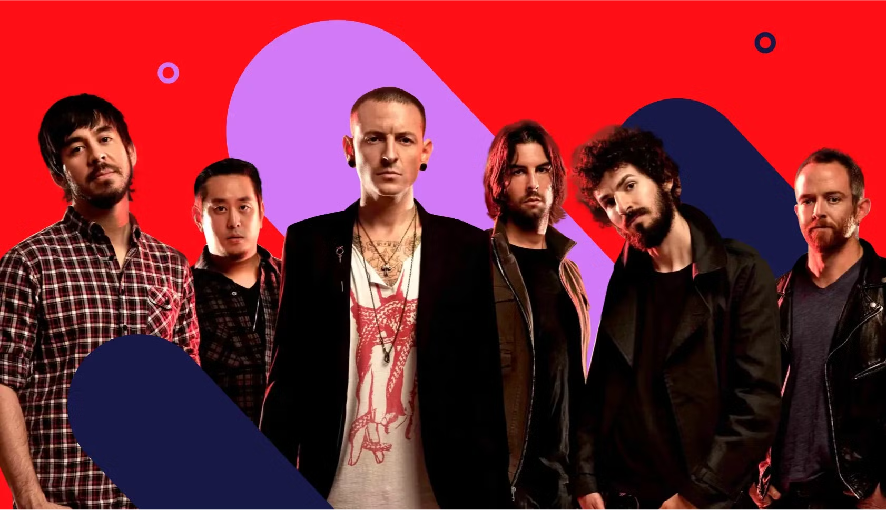
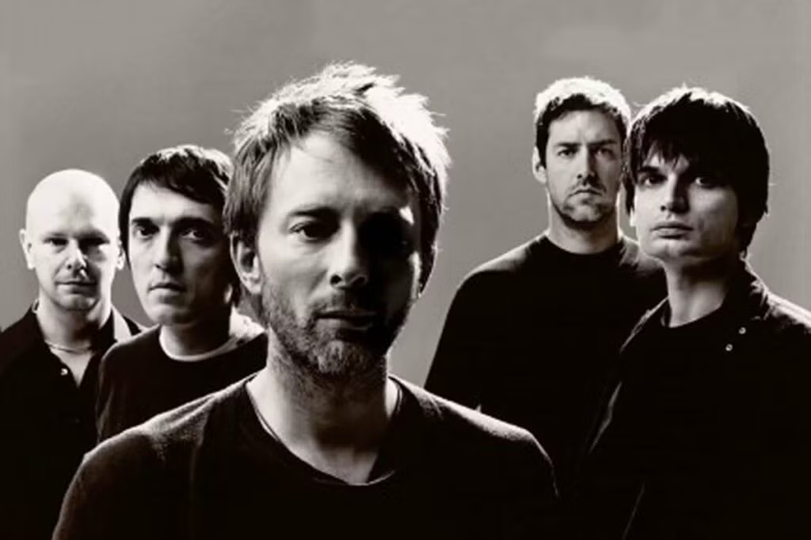
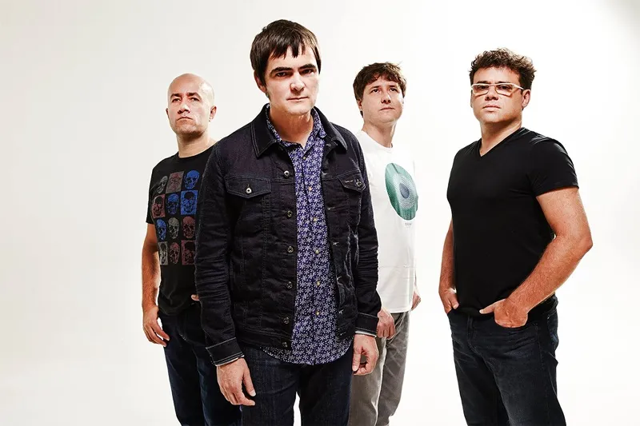

Para um encontro único de ritmos, culturas e estilos musicais no coração da nossa faculdade, o Festival
da
Católica SC reúne cerca de 10 bandas e artistas incríveis, trazendo variedade e harmonia ao palco. Nossa
missão é
promover a arte, o entretenimento e a integração entre estudantes, comunidade e apaixonados por música.
O evento será a oportunidade perfeita para você:
Descobrir novos talentos: Conheça bandas de diferentes vertentes musicais.

Linkin Park

Radiohead

Skank
Celebrar a diversidade: Do rock ao pop, do sertanejo ao jazz, todos os ritmos têm
espaço.
Aproveitar momentos inesquecíveis: Venha viver uma experiência que vai muito além
da música!